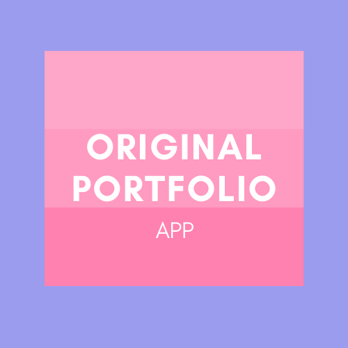

Original Portfolio APP

This is my professional portfolio website. This is the first version of my portfolio, once I have more/actual experience I intend on adding those projects to this portfolio (in the mean time, please enjoy the images I have curated for you).
You can access each site by clicking on the desired page you'd like to visit, on the nav bar on the top of each site. By clicking the word you are trigerring the link the word is linked to, respectively, to take you to the desired page. If you find yourslf on either the "Portfolio" or "Contact" pages, and you want to go back to the "About Me" page you can do so by clicking either the "About Me" or "Claudia Hernandez" links located on the nav bar.
On the "About Me" page you will find a profesional headshot of myself, along with a short bio and contact information. The phone number and emails shown on this page are fake, but, the link to my LinkedIn page is real. I did this because at the moment I am not comfortable with people getting a hold of that personal information and if they wanted to get in contact they can just fill out the contact form. At the bottom of this, and all the other pages, you will find a sticky footer.
Here is an example of what the "About Me" page looks like:
On the "Portfolio" page you will find the curated images I spoke about earlier. Essentially, these images are just placeholders and will be replaced with my projects once I have them available.
On the "Contact", you will find the contact form. This form can be used by potential and existing clients if they want to get in contact with me. At the moment the form is not linked to an email, but it will become enabled on the final porfolio.
To view the working app click the Original Portfolio icon or click the deployed linked below.
Deployed Link: https://claudialhc.github.io/my-portfolio/